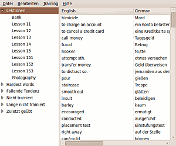
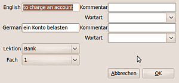
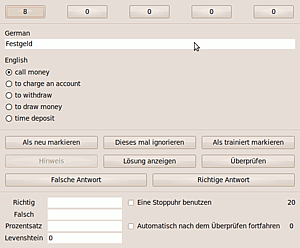

MoreWordsPlease
Archivierte Anleitung
Dieser Artikel wurde archiviert, da er - oder Teile daraus - nur noch unter einer älteren Ubuntu-Version nutzbar ist. Diese Anleitung wird vom Wiki-Team weder auf Richtigkeit überprüft noch anderweitig gepflegt. Zusätzlich wurde der Artikel für weitere Änderungen gesperrt.
Zum Verständnis dieses Artikels sind folgende Seiten hilfreich:
MoreWordsPlease ist ein Vokabeltrainer, geschrieben in Python und PyGTK. Vokabeln werden in Vokabelboxen mit üblicherweise fünf Fächern trainiert, d.h eine Vokabel beginnt im Fach 1, wurde sie richtig übersetzt, geht sie in das nächste Fach. Falls eine Vokabel nicht nichtig übersetzt wurde, geht sie in das vorherige Fach zurück.
Es können die Vokabeldateien des KDE Education Projekts benutzt werden. Dieses Projekt stellt nicht nur diverse Dateien zu Sprachen, sondern auch zu anderen Themen zur Verfügung. Beispielsweise zum Lernen der Prüfungsfragen des Funkzeugnisses. Somit stehen dem Benutzer eine Vielzahl von vorgefertigten Lernthemen zur Verfügung. Ein Hauptaugenmerk wird auch auf das Anlegen von eigenen Vokabeldateien gelegt. Ebenso können CSV-Dateien von anderen Vokabeltrainern importiert werden.
Ein Vorteil von MoreWordsPlease gegenüber anderen Vokabeltrainern ist die Vielzahl von Trainingsmodi und, daß Antworten nicht eingegeben werden müssen, sondern man selber entscheiden kann, ob die Antwort gewusst wurde. Damit ist auch das Lernen von ganzen Sätzen komfortabel. Die Überprüfung der korrekten Schreibweise ist natürlich auch enthalten. Hierfür wird der Levenshtein-Algorythmus verwendet. Als Trainingsmodi werden Multiple Choice, Buchstabensalat und Test unterstützt.

Eine Vielzahl von statistischen Funktionen erleichtern das Lernen. Beispielsweise können die zuletzt gelernten Wörter aufgerufen werden und erneut trainiert werden. Andere Statistikfunktionen sind schwerste Wörter, schlechte Tendenz, lange nicht oder noch nie trainiert.
Merkmale:
"Vokabelbox"-Lernmodus mit flexibler Anzahl von Fächern
Stoppuhrmodus, "normaler" Lernmodus, Buchstabensalat, Multiple Choice
Lösungen müssen nicht eingegeben werden, Lösungen können trotzdem angezeigt und als korrekt markiert werden
Statistikfunktionen: zuletzt Trainiert, schwerste Wörter, schlechte Tendenz, lange nicht trainiert, nie trainiert
Hierarchische Anordnung von Lektionen
Json und Pickle-Dateien werden unterstützt
Import von HVTML und CSV-Dateien
Unicode-Unterstützung (Japanisch, Koreanisch, Chinesisch, ...)
Einfach durch Python erweiterbar
Übersetzbar in Launchpad
Plattformunabhängig
Hinweis:
Gegenwärtig steht _nur für Lucid_ eine Entwicklungsversion zum Testen bereit, d.h. Fehler können auftreten. Das Programm befindet sich in ständiger Weiterentwicklung, Entwickler und Tester werden gesucht.
Installation¶
Adresszeile zum Hinzufügen des PPAs:
ppa:stesind/ppa
Hinweis!
Zusätzliche Fremdquellen können das System gefährden.
Ein PPA unterstützt nicht zwangsläufig alle Ubuntu-Versionen. Weitere Informationen sind der  PPA-Beschreibung des Eigentümers/Teams stesind zu entnehmen.
PPA-Beschreibung des Eigentümers/Teams stesind zu entnehmen.
Damit Pakete aus dem PPA genutzt werden können, müssen die Paketquellen neu eingelesen werden.
Danach müssen die Paketquellen in der Paketverwaltung neu geladen werden. Anschließend kann das Paket
morewordsplease (ppa)
 mit apturl
mit apturl
Paketliste zum Kopieren:
sudo apt-get install morewordsplease
sudo aptitude install morewordsplease
installiert werden.
Benutzung¶
Start¶
Nach der Installation befindet sich MoreWordsPlease im GNOME-Anwendungsmenü "Bildung".
"Anwendungen -> Bildung -> Morewordsplease"
Import¶
"Datei -> Import"
Da das Programm ohne Vokabeln ausgeliefert wird, müssen diese erfasst oder importiert werden. Als Importformat wird CSV in diversen Varianten und auch das Format KVTML des KDE Education Projekts unterstützt. CSV-Dateien können beispielsweise aus OpenOffice.org exportiert werden.
Im oberen Teil des Importdialogs kann festgelegt werden, ob Anführungszeichen benutzt werden sollen, welches Zeichen das Trennzeichen ist und welche Codierung benutzt wird. Im unteren Teil des Dialogs werden die zu importierenden Spalten festgelegt. Und zwar in der Reihenfolge, wie sie in der CSV-Datei erscheinen. Dabei können Spalten übersprungen werden.
Bei CSV-Dateien kann auch eine 2-stufige Hierarchie importiert werden. Dazu dient die Spalte "Wortschatz (Hauptlektion)". Sie ist die obere Ebene in der Hierarchie.
Hinweis:
* Leider gibt es nicht ein KVTML-Format, sondern diverse Varianten. MoreWordsPlease versucht eine Datei zuerst als KDE4-Variante zu importieren, bei Fehlern als KDE3-Variante.
Es hat sich bei CSV-Dateien bewährt, die zu importierende Datei in einem Texteditor anzuschauen und herauszufinden wie sie aufgebaut ist. Die Informationen, die in den Spalten stehen, können in dem CSV-Eigenschaftsdialog ausgewählt werden. Dabei können auch Spalten übersprungen werden.
Vokabelverwaltung¶

Vokabeln sind in Lektionen unterteilt. Dazu können diese angelegt, umbenannt und gelöscht werden. Vokabeln können zwischen Lektionen verschoben werden. Diese können direkt in der Tabelle editiert werden oder im Dialog mit mehr Funktionen. Zum Löschen, Bearbeiten oder Verschieben von Vokabeln müssen diese zuerst in der Vokabelliste markiert werden.
Ebenso müssen die zu bearbeitenden Lektionen vorher markiert werden. Es ist möglich, Lektionen in Hierarchien anzuordnen. Gegenwärtig werden vier Ebenen unterstützt.
"Bearbeiten -> Wort editieren"
Die Eigenschaften des Vokabulars können hier bearbeitet werden:
"Bearbeiten -> Vokabular Eigenschaften"
Die zu den Eingenschaften des Vokabulars zählen die Bezeichnungen der Sprachen. Diese sind hier zu pflegen. Zusätzlich können noch Informationen zum Autor, Lizenz, usw. gepflegt werden. Diese werden beim Import aus KVTML-Dateien ebenfalls importiert.
Eigenschaften¶
Im Eigenschaftsdialog unter "Bearbeiten -> Eigenschaften" von MoreWordsPlease können Optionen zum automatischen Speichern und Laden, für die Timer und die Anzeige von Kommentaren und der Wortart im Test getätigt werden. Für Deutsch ist wichtig, dass hier die Großschreibung im Test ignoriert werden kann. Ebenso kann hier die Lernrichtung eingestellt werden. Die Anzahl der Fächer kann zwischen 3 und 8 variiert werden.
Test¶
"Training -> Test"

Im Testfenster kann durch Drücken der ⏎ Taste die eingegebene Lösung überprüft werden. Falls diese richtig ist, wird das Eingabefeld grün markiert. Falls die Lösung falsch ist, rot. Bei richtiger Eingabe kann durch nochmaliges Drücken der ⏎ Taste die nächste Vokabel angezeigt werden. Es ist möglich, Kommentare und der Wortart anzuzeigen, die evtl. Hinweis darauf geben, ob beispielsweise ein Adverb gesucht wird.
Der Levenshtein-Wert ist 0, wenn die Lösung richtig ist. Werte größer 0 stellen die Anzahl der Operationen dar, die benötigt werden, um die richtige Lösung zu erhalten. 2 kann beispielsweise bedeuten, einen Buchstaben zu ändern und einen hinzu zu fügen.
Alternativ können die Timer benutzt werden. Der erste Timer bestimmt die Zeit, bis die Lösung überprüft wird, der zweite die Zeit, die nach der Überprüfung vergeht, bis die nächste Vokabel gezeigt wird. Falls die Lösung richtig ist, wird dann sofort die nächste Vokabel gezeigt. Beide Timer können getrennt eingesetzt werden.
Weiterhin ist es möglich, die Lernrichtung umzukehren, d.h. nicht D->E sondern E->D zu lernen. Dieses wird, wie die Länge der Timer im Eigenschaftsdialog eingestellt.
Neben dem normalen Lernmodus stehen auch Multiple Choice (Mehrfachauswahl) und Buchstabensalat zur Verfügung.
Speichern und Export¶
Vokabeln werden in Python-Pickle-Dateien gespeichert. Als Export-Format steht CSV zur Verfügung.
"Datei -> Export CSV"
Entwickeln, Übersetzen und Testen¶
Der Code für MoreWordsPlease ist auf Launchpad gehostet. Dort können auch Fehler gemeldet und Übersetzungen gemacht werden. Entwickelt wurde mit Quickly unter Python 2.6 und Pygtk.
- Erstellt mit Inyoka
-
 2004 – 2017 ubuntuusers.de • Einige Rechte vorbehalten
2004 – 2017 ubuntuusers.de • Einige Rechte vorbehalten
Lizenz • Kontakt • Datenschutz • Impressum • Serverstatus -
Serverhousing gespendet von